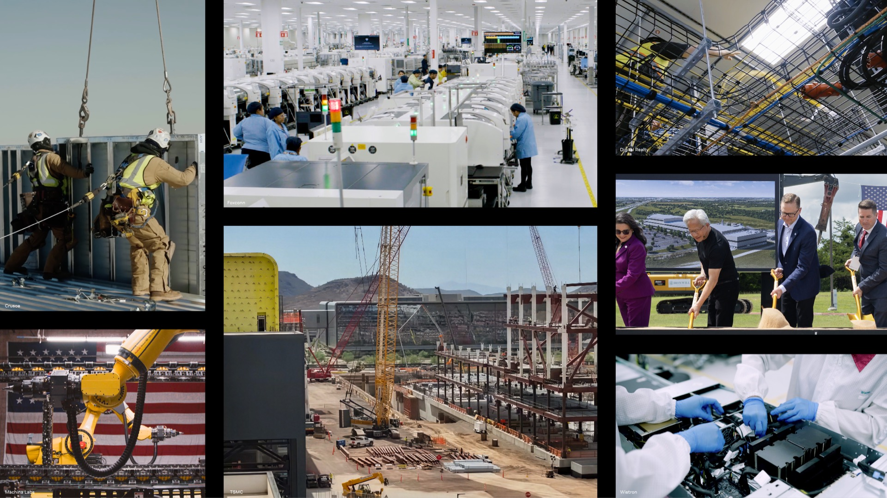

NVIDIA Build in America: AI sovereignty now runs through industrial capacity
NVIDIA's official July 1, 2026 post is a sovereign-AI story in the industrial sense: the United States is not only trying to consume AI, but to produce locally the infrastructure that conditions its autonomy.

1. What NVIDIA announced
NVIDIA says its partners are investing in American manufacturing, supply chains, energy grids, and workforce skills so the country can produce AI infrastructure for healthcare, science, industry, and technology leadership. The post mentions a footprint across 43 states, Blackwell lines in Phoenix with TSMC, and AI supercomputer plants with Foxconn in Houston and Wistron in Dallas.
The message is broader than a manufacturing plan: NVIDIA connects chips, systems, energy, cooling, digital twins, workforce, and AI factories. The company also restates its goal to produce up to $500 billion of AI infrastructure in the United States, with expected impact on GDP, jobs, and national compute capacity.
2. Why this is a sovereign-AI signal
AI sovereignty is no longer limited to model choice or data residency. It also depends on securing GPU supply, building AI centers, delivering enough power, and maintaining local skills to operate those platforms. That is exactly what this announcement makes visible.
For Europe, Belgium, and France, the signal is useful: sovereign AI strategies must treat infrastructure as a complete chain. A national or sector program that only covers hosting or compliance still leaves critical dependencies in hardware, cooling, energy, integrators, and operations tooling.
3. Practical reading for organizations
CIOs and business leaders can use this as an audit grid. Before launching AI assistants or sensitive Odoo Enterprise use cases, they need to know which layers are genuinely controllable: compute suppliers, location, failover capacity, logging, energy contracts, supervision, model licenses, and data governance.
The practical path is to classify workloads by criticality. Low-sensitivity use cases can remain on well-governed global platforms. Regulated, industrial, or public-sector workloads need a stronger trajectory: local capacity, hybrid architecture, observability, reversibility, and contractual controls over critical layers.
Assess AI sovereignty as a complete execution chain: compute, energy, network, data, models, operations, and replacement capacity.
Frame a sovereign AI architecture